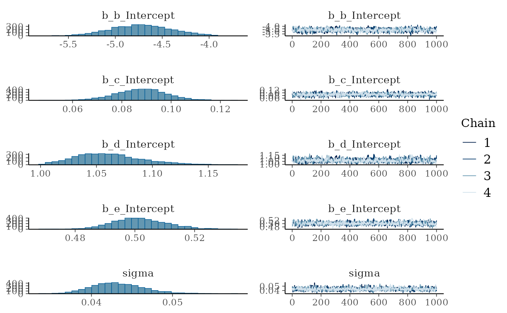
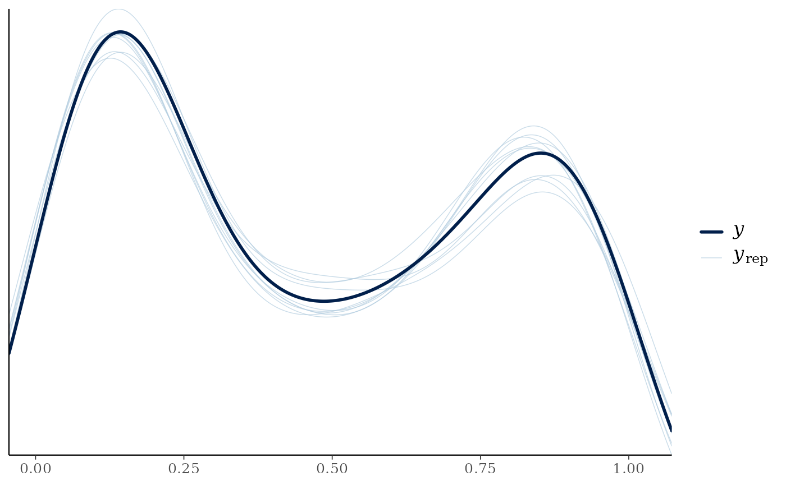
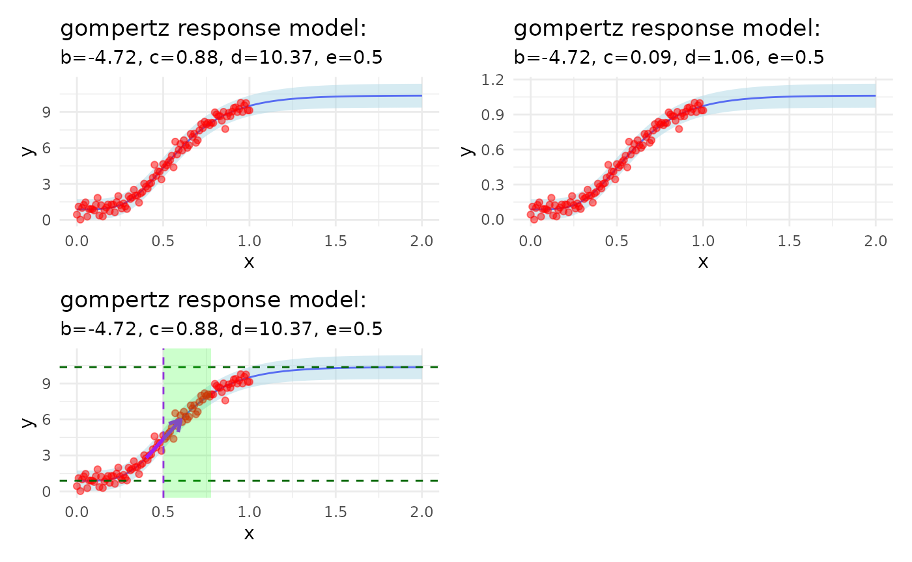
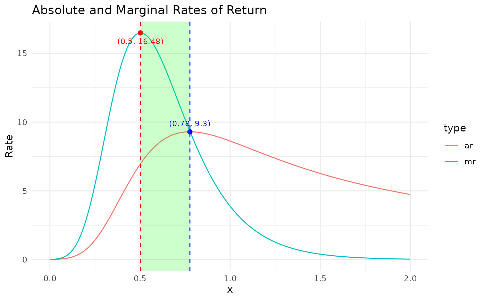

Fitting a Response Model: A Simulated Example
simulated_example.Rmd
library(mrmopt)
library(brms)
#> Loading required package: Rcpp
#> Loading 'brms' package (version 2.23.0). Useful instructions
#> can be found by typing help('brms'). A more detailed introduction
#> to the package is available through vignette('brms_overview').
#>
#> Attaching package: 'brms'
#> The following object is masked from 'package:stats':
#>
#> ar
library(purrr)
library(gt)
library(dplyr)
#>
#> Attaching package: 'dplyr'
#> The following objects are masked from 'package:stats':
#>
#> filter, lag
#> The following objects are masked from 'package:base':
#>
#> intersect, setdiff, setequal, union
library(ggplot2)
library(patchwork)
x_values <- seq(0, 1, by = 0.01)
b <- -5
c <- 1
d <- 10
e <- 0.5
y_response = rm_Gompertz(x_values, b, c, d, e) + rnorm(length(x_values), mean = 0, sd = 0.4)
response_df <- bind_cols(
x = x_values,
y = y_response
)
response_df |>
ggplot(aes(x, y)) +
geom_point() +
labs(title = paste0("
Response Curve Model Comparison
", "b: ", b, ", c: ", c, ", d: ", d, ", e: ", e),
subtitle = "With Random Noise N(0, 0.4)"
) +
theme_minimal()
response_fit =
fit_response(
data = response_df,
x = "x",
y = "y",
type = "gompertz",
auto = TRUE,
# prior = c(
# prior(normal(-5, 10), nlpar = "b", lb = -10, ub = 0),
# prior(normal(0, 5), nlpar = "c", ub = 4.9),
# prior(normal(10, 5), nlpar = "d", lb = 5.1),
# prior(normal(0.6, 2), nlpar = "e")
# ),
chains = 2,
iter = 2000,
warmup = 1000,
seed = 007,
control = list(adapt_delta = 0.90)
)
#> y ~ c + (d - c) * exp(-exp(b * (x - e)))
#> b ~ 1
#> c ~ 1
#> d ~ 1
#> e ~ 1
#>
#> SAMPLING FOR MODEL 'anon_model' NOW (CHAIN 1).
#> Chain 1:
#> Chain 1: Gradient evaluation took 9.2e-05 seconds
#> Chain 1: 1000 transitions using 10 leapfrog steps per transition would take 0.92 seconds.
#> Chain 1: Adjust your expectations accordingly!
#> Chain 1:
#> Chain 1:
#> Chain 1: Iteration: 1 / 2000 [ 0%] (Warmup)
#> Chain 1: Iteration: 200 / 2000 [ 10%] (Warmup)
#> Chain 1: Iteration: 400 / 2000 [ 20%] (Warmup)
#> Chain 1: Iteration: 600 / 2000 [ 30%] (Warmup)
#> Chain 1: Iteration: 800 / 2000 [ 40%] (Warmup)
#> Chain 1: Iteration: 1000 / 2000 [ 50%] (Warmup)
#> Chain 1: Iteration: 1001 / 2000 [ 50%] (Sampling)
#> Chain 1: Iteration: 1200 / 2000 [ 60%] (Sampling)
#> Chain 1: Iteration: 1400 / 2000 [ 70%] (Sampling)
#> Chain 1: Iteration: 1600 / 2000 [ 80%] (Sampling)
#> Chain 1: Iteration: 1800 / 2000 [ 90%] (Sampling)
#> Chain 1: Iteration: 2000 / 2000 [100%] (Sampling)
#> Chain 1:
#> Chain 1: Elapsed Time: 0.88 seconds (Warm-up)
#> Chain 1: 0.689 seconds (Sampling)
#> Chain 1: 1.569 seconds (Total)
#> Chain 1:
#>
#> SAMPLING FOR MODEL 'anon_model' NOW (CHAIN 2).
#> Chain 2:
#> Chain 2: Gradient evaluation took 5e-05 seconds
#> Chain 2: 1000 transitions using 10 leapfrog steps per transition would take 0.5 seconds.
#> Chain 2: Adjust your expectations accordingly!
#> Chain 2:
#> Chain 2:
#> Chain 2: Iteration: 1 / 2000 [ 0%] (Warmup)
#> Chain 2: Iteration: 200 / 2000 [ 10%] (Warmup)
#> Chain 2: Iteration: 400 / 2000 [ 20%] (Warmup)
#> Chain 2: Iteration: 600 / 2000 [ 30%] (Warmup)
#> Chain 2: Iteration: 800 / 2000 [ 40%] (Warmup)
#> Chain 2: Iteration: 1000 / 2000 [ 50%] (Warmup)
#> Chain 2: Iteration: 1001 / 2000 [ 50%] (Sampling)
#> Chain 2: Iteration: 1200 / 2000 [ 60%] (Sampling)
#> Chain 2: Iteration: 1400 / 2000 [ 70%] (Sampling)
#> Chain 2: Iteration: 1600 / 2000 [ 80%] (Sampling)
#> Chain 2: Iteration: 1800 / 2000 [ 90%] (Sampling)
#> Chain 2: Iteration: 2000 / 2000 [100%] (Sampling)
#> Chain 2:
#> Chain 2: Elapsed Time: 1.218 seconds (Warm-up)
#> Chain 2: 1.297 seconds (Sampling)
#> Chain 2: 2.515 seconds (Total)
#> Chain 2:
#>
#> SAMPLING FOR MODEL 'anon_model' NOW (CHAIN 3).
#> Chain 3:
#> Chain 3: Gradient evaluation took 5e-05 seconds
#> Chain 3: 1000 transitions using 10 leapfrog steps per transition would take 0.5 seconds.
#> Chain 3: Adjust your expectations accordingly!
#> Chain 3:
#> Chain 3:
#> Chain 3: Iteration: 1 / 2000 [ 0%] (Warmup)
#> Chain 3: Iteration: 200 / 2000 [ 10%] (Warmup)
#> Chain 3: Iteration: 400 / 2000 [ 20%] (Warmup)
#> Chain 3: Iteration: 600 / 2000 [ 30%] (Warmup)
#> Chain 3: Iteration: 800 / 2000 [ 40%] (Warmup)
#> Chain 3: Iteration: 1000 / 2000 [ 50%] (Warmup)
#> Chain 3: Iteration: 1001 / 2000 [ 50%] (Sampling)
#> Chain 3: Iteration: 1200 / 2000 [ 60%] (Sampling)
#> Chain 3: Iteration: 1400 / 2000 [ 70%] (Sampling)
#> Chain 3: Iteration: 1600 / 2000 [ 80%] (Sampling)
#> Chain 3: Iteration: 1800 / 2000 [ 90%] (Sampling)
#> Chain 3: Iteration: 2000 / 2000 [100%] (Sampling)
#> Chain 3:
#> Chain 3: Elapsed Time: 0.949 seconds (Warm-up)
#> Chain 3: 0.964 seconds (Sampling)
#> Chain 3: 1.913 seconds (Total)
#> Chain 3:
#>
#> SAMPLING FOR MODEL 'anon_model' NOW (CHAIN 4).
#> Chain 4:
#> Chain 4: Gradient evaluation took 4.9e-05 seconds
#> Chain 4: 1000 transitions using 10 leapfrog steps per transition would take 0.49 seconds.
#> Chain 4: Adjust your expectations accordingly!
#> Chain 4:
#> Chain 4:
#> Chain 4: Iteration: 1 / 2000 [ 0%] (Warmup)
#> Chain 4: Iteration: 200 / 2000 [ 10%] (Warmup)
#> Chain 4: Iteration: 400 / 2000 [ 20%] (Warmup)
#> Chain 4: Iteration: 600 / 2000 [ 30%] (Warmup)
#> Chain 4: Iteration: 800 / 2000 [ 40%] (Warmup)
#> Chain 4: Iteration: 1000 / 2000 [ 50%] (Warmup)
#> Chain 4: Iteration: 1001 / 2000 [ 50%] (Sampling)
#> Chain 4: Iteration: 1200 / 2000 [ 60%] (Sampling)
#> Chain 4: Iteration: 1400 / 2000 [ 70%] (Sampling)
#> Chain 4: Iteration: 1600 / 2000 [ 80%] (Sampling)
#> Chain 4: Iteration: 1800 / 2000 [ 90%] (Sampling)
#> Chain 4: Iteration: 2000 / 2000 [100%] (Sampling)
#> Chain 4:
#> Chain 4: Elapsed Time: 0.867 seconds (Warm-up)
#> Chain 4: 0.701 seconds (Sampling)
#> Chain 4: 1.568 seconds (Total)
#> Chain 4:
summary(response_fit)
#> Family: gaussian
#> Links: mu = identity
#> Formula: y ~ c + (d - c) * exp(-exp(b * (x - e)))
#> b ~ 1
#> c ~ 1
#> d ~ 1
#> e ~ 1
#> Data: data (Number of observations: 101)
#> Draws: 4 chains, each with iter = 2000; warmup = 1000; thin = 1;
#> total post-warmup draws = 4000
#>
#> Regression Coefficients:
#> Estimate Est.Error l-95% CI u-95% CI Rhat Bulk_ESS Tail_ESS
#> b_Intercept -4.72 0.32 -5.34 -4.09 1.00 1011 764
#> c_Intercept 0.09 0.01 0.07 0.11 1.00 1700 1742
#> d_Intercept 1.06 0.03 1.01 1.13 1.00 939 821
#> e_Intercept 0.50 0.01 0.48 0.52 1.00 1155 1163
#>
#> Further Distributional Parameters:
#> Estimate Est.Error l-95% CI u-95% CI Rhat Bulk_ESS Tail_ESS
#> sigma 0.04 0.00 0.04 0.05 1.00 2119 1930
#>
#> Draws were sampled using sampling(NUTS). For each parameter, Bulk_ESS
#> and Tail_ESS are effective sample size measures, and Rhat is the potential
#> scale reduction factor on split chains (at convergence, Rhat = 1).
plot(response_fit)
pp_check(response_fit)
mrm_plot_response(response_fit) +
mrm_plot_response(response_fit, scaled = FALSE) +
mrm_plot_response(response_fit, markup = TRUE) +
plot_layout(ncol = 2)
bind_cols(
actual = c(b, c, d, e),
mrm_params(response_fit) |>
map(~round(unlist(.x), 2)) |>
as_tibble()
) |>
gt::gt() |>
gt::tab_header(
title = "Parameter Estimates vs Actual Values",
subtitle = "Using the Gompertz Response Model"
)| Parameter Estimates vs Actual Values | |||
| Using the Gompertz Response Model | |||
| actual | center | lower | upper |
|---|---|---|---|
| -5.0 | -4.72 | -5.34 | -4.09 |
| 1.0 | 0.88 | 0.69 | 1.07 |
| 10.0 | 10.37 | 9.88 | 11.02 |
| 0.5 | 0.50 | 0.48 | 0.52 |
mrm_params_table(response_fit, scaled = FALSE) |>
gt::tab_header(
title = "Parameter Estimates Table",
subtitle = "Using the Gompertz Response Model"
)| Parameter Estimates Table | |||
| Using the Gompertz Response Model | |||
| Parameter | center | lower | upper |
|---|---|---|---|
| b (growth rate) | -4.723582 | -5.343477 | -4.093218 |
| c (lower asymptote) | 0.08788166 | 0.06772411 | 0.1075922 |
| d (upper asymptote) | 1.061462 | 1.011703 | 1.128255 |
| e (inflection point) | 0.5017242 | 0.4849971 | 0.5203375 |
response = mrm_infer(response_fit, length.out = 100)
head(response) |>
gt::gt() |>
gt::tab_header(
title = "Inferred Response Data",
subtitle = "Using the Gompertz Response Model"
) |>
gt::fmt_number(
columns = tidyselect::everything(),
decimals = 2
)| Inferred Response Data | |||||||||||||
| Using the Gompertz Response Model | |||||||||||||
| x | y_Estimate | y_Est.Error | y_Q2.5 | y_Q97.5 | y_gompertz_center | y_gompertz_lower | y_gompertz_upper | ar | mr | ar_lower | mr_lower | ar_upper | mr_upper |
|---|---|---|---|---|---|---|---|---|---|---|---|---|---|
| 0.00 | 0.87 | 0.43 | 0.02 | 1.71 | 0.88 | 0.04 | 1.73 | NaN | NA | NaN | NA | NaN | NA |
| 0.02 | 0.88 | 0.43 | 0.06 | 1.71 | 0.88 | 0.04 | 1.73 | 0.02 | 0.02 | 0.02 | 0.02 | 0.01 | 0.01 |
| 0.04 | 0.88 | 0.43 | 0.04 | 1.72 | 0.88 | 0.04 | 1.73 | 0.03 | 0.04 | 0.03 | 0.04 | 0.03 | 0.04 |
| 0.06 | 0.88 | 0.43 | 0.04 | 1.74 | 0.88 | 0.04 | 1.73 | 0.05 | 0.08 | 0.05 | 0.09 | 0.04 | 0.08 |
| 0.08 | 0.89 | 0.43 | 0.07 | 1.74 | 0.89 | 0.04 | 1.73 | 0.08 | 0.16 | 0.08 | 0.17 | 0.07 | 0.16 |
| 0.10 | 0.90 | 0.43 | 0.07 | 1.76 | 0.89 | 0.05 | 1.74 | 0.12 | 0.30 | 0.12 | 0.30 | 0.12 | 0.30 |
mrm_plot_return(response_fit)